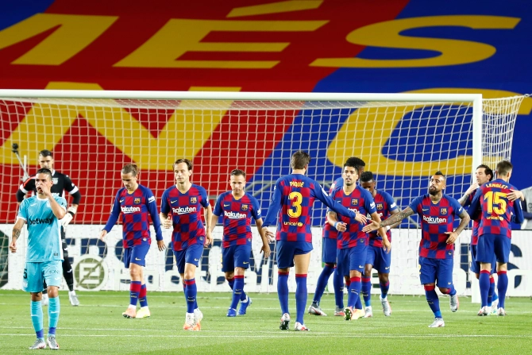

DNBC NEWS
DNBC NEWS
DNBC NEWS
CHEW THE FAT Wonderkid Ansu Fati, 17, scores again and Lionel Messi converts penalty as Barcelona increase lead at the top
Joe Brophy 16 Jun 2020, 23:23 | Updated: 17 Jun 2020, 7:41
ANSU FATI scored again to help Barcelona ease past Leganes and increase their lead over Real Madrid at the top of LaLiga to five points.
The 17-year-old notched his fifth goal of the season just before half-time before a Lionel Messi penalty earned the Catalans a 2-0 win and a comfortable three points at an empty Camp Nou.

The result continues Barcelona's one hundred per cent win rate following the Spanish season
restart, following a 4-0 away win at Mallorca.
The pressure was on as they returned to a deserted Camp Nou after rivals Madrid hit three
past Eibar on Sunday to keep the gap at the top to two points.
Yet Quique Setien's never really had to get out of second gear against relegation-threatened
Leganes.
The away side, who remain rooted to the bottom of the table, lost key Danish forward
Braithwaite to Barcelona back in February as an emergency signing.
And despite notching his first Barca goal against Mallorca, the 29-year-old striker found
himself an unused substitute against his old side, who failed to offer much in attack
without him.
The reigning LaLiga champions raced out of the blocks at home as Messi pulled the strings,
with the Argentine setting free Firpo with a brilliant lofted ball but the latter's crossed
was scrambled away.
Miguel Angel Guerrero, who has been tasked with replacing Braithwaite for the
relegation-threatened visitors, did spurn a glorious chance to open the lead.
A loose ball on the break found the Spaniard with a clear sight on goal but Clement Lenglet
did well to scramble back and hack the ball away.
Barcelona continued to press and probe throughout the first half, with Antoine Griezmann and
Ivan Rakitic both squandering half-chances.
Yet it was youngster Ansu who broke the deadlock two minutes before the break.
The 17-year-old collected the ball on the edge of the box and hit a low shot through the
legs of a defender and into the bottom corner past Cuellar.
Griezmanna came close to doubling Barcelona's lead in the second-half but had a goal ruled
out.
The World Cup winner finished tidily from a Nelson Semedo cross but VAR chalked the strike
off after replays showed the Portuguese was offside.
Yet Barca didn't have to wait long for their second as captain Messi was brought down in the
area after a classic slaloming run between defenders.
The Argentine then dusted himself off to fire low to the Cuellar's left, with the goalkeeper
diving the other way.
There was late drama in added time as Leganes boss Javier Aguirre was shown a red card for
berating the fourth official.
But the incident failed to take the shine off Barcelona's sixth win from their last six
games to leave them firmly in the driving seat to defend their LaLiga crown.